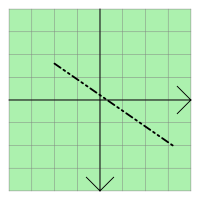

QGraphicsLineItem Class
The QGraphicsLineItem class provides a line item that you can add to a QGraphicsScene. More...
| Header: | #include <QGraphicsLineItem> |
| CMake: | find_package(Qt6 REQUIRED COMPONENTS Widgets) target_link_libraries(mytarget PRIVATE Qt6::Widgets) |
| qmake: | QT += widgets |
| Inherits: | QGraphicsItem |
Public Types
| enum | anonymous { Type } |
Public Functions
| QGraphicsLineItem(QGraphicsItem *parent = nullptr) | |
| QGraphicsLineItem(const QLineF &line, QGraphicsItem *parent = nullptr) | |
| QGraphicsLineItem(qreal x1, qreal y1, qreal x2, qreal y2, QGraphicsItem *parent = nullptr) | |
| virtual | ~QGraphicsLineItem() |
| QLineF | line() const |
| QPen | pen() const |
| void | setLine(const QLineF &line) |
| void | setLine(qreal x1, qreal y1, qreal x2, qreal y2) |
| void | setPen(const QPen &pen) |
Reimplemented Public Functions
| virtual QRectF | boundingRect() const override |
| virtual bool | contains(const QPointF &point) const override |
| virtual bool | isObscuredBy(const QGraphicsItem *item) const override |
| virtual QPainterPath | opaqueArea() const override |
| virtual void | paint(QPainter *painter, const QStyleOptionGraphicsItem *option, QWidget *widget = nullptr) override |
| virtual QPainterPath | shape() const override |
| virtual int | type() const override |
Detailed Description
To set the item's line, pass a QLineF to QGraphicsLineItem's constructor, or call the setLine() function. The line() function returns the current line. By default the line is black with a width of 0, but you can change this by calling setPen().

QGraphicsLineItem uses the line and the pen width to provide a reasonable implementation of boundingRect(), shape(), and contains(). The paint() function draws the line using the item's associated pen.
See also QGraphicsPathItem, QGraphicsRectItem, QGraphicsEllipseItem, QGraphicsTextItem, QGraphicsPolygonItem, QGraphicsPixmapItem, and Graphics View Framework.
Member Type Documentation
enum QGraphicsLineItem::anonymous
The value returned by the virtual type() function.
| Constant | Value | Description |
|---|---|---|
QGraphicsLineItem::Type | 6 | A graphics line item |
Member Function Documentation
[explicit] QGraphicsLineItem::QGraphicsLineItem(QGraphicsItem *parent = nullptr)
Constructs a QGraphicsLineItem. parent is passed to QGraphicsItem's constructor.
See also QGraphicsScene::addItem().
[explicit] QGraphicsLineItem::QGraphicsLineItem(const QLineF &line, QGraphicsItem *parent = nullptr)
Constructs a QGraphicsLineItem, using line as the default line. parent is passed to QGraphicsItem's constructor.
See also QGraphicsScene::addItem().
[explicit] QGraphicsLineItem::QGraphicsLineItem(qreal x1, qreal y1, qreal x2, qreal y2, QGraphicsItem *parent = nullptr)
Constructs a QGraphicsLineItem, using the line between (x1, y1) and (x2, y2) as the default line. parent is passed to QGraphicsItem's constructor.
See also QGraphicsScene::addItem().
[virtual noexcept] QGraphicsLineItem::~QGraphicsLineItem()
Destroys the QGraphicsLineItem.
[override virtual] QRectF QGraphicsLineItem::boundingRect() const
Reimplements: QGraphicsItem::boundingRect() const.
[override virtual] bool QGraphicsLineItem::contains(const QPointF &point) const
Reimplements: QGraphicsItem::contains(const QPointF &point) const.
[override virtual] bool QGraphicsLineItem::isObscuredBy(const QGraphicsItem *item) const
Reimplements: QGraphicsItem::isObscuredBy(const QGraphicsItem *item) const.
QLineF QGraphicsLineItem::line() const
Returns the item's line, or a null line if no line has been set.
See also setLine().
[override virtual] QPainterPath QGraphicsLineItem::opaqueArea() const
Reimplements: QGraphicsItem::opaqueArea() const.
[override virtual] void QGraphicsLineItem::paint(QPainter *painter, const QStyleOptionGraphicsItem *option, QWidget *widget = nullptr)
Reimplements: QGraphicsItem::paint(QPainter *painter, const QStyleOptionGraphicsItem *option, QWidget *widget).
QPen QGraphicsLineItem::pen() const
Returns the item's pen, or a black solid 0-width pen if no pen has been set.
See also setPen().
void QGraphicsLineItem::setLine(const QLineF &line)
Sets the item's line to be the given line.
See also line().
void QGraphicsLineItem::setLine(qreal x1, qreal y1, qreal x2, qreal y2)
This is an overloaded function.
Sets the item's line to be the line between (x1, y1) and (x2, y2).
This is the same as calling setLine(QLineF(x1, y1, x2, y2)).
void QGraphicsLineItem::setPen(const QPen &pen)
Sets the item's pen to pen. If no pen is set, the line will be painted using a black solid 0-width pen.
See also pen().
[override virtual] QPainterPath QGraphicsLineItem::shape() const
Reimplements: QGraphicsItem::shape() const.
[override virtual] int QGraphicsLineItem::type() const
Reimplements: QGraphicsItem::type() const.